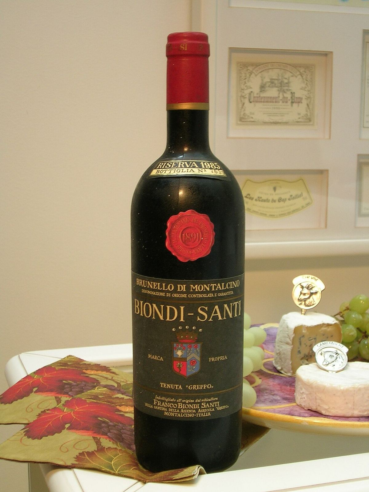

Biondi-Santi Brunello di Montalcino
El Brunello de la Tenuta Greppo, la casa a la que la tradición atribuye el nacimiento de la denominación, un Sangiovese de estilo clásico y larga vida.

El Brunello di Montalcino de Biondi-Santi, a menudo llamado «Annata» para distinguirlo de la Riserva, procede de los viñedos de la Tenuta Greppo, en las colinas a las afueras del pueblo de Montalcino, a una altitud relativamente elevada para la zona.
Se elabora sólo con Sangiovese, a partir de la selección de cepas que la familia ha conservado y propagado durante generaciones. La crianza se realiza en grandes toneles de roble de Eslavonia, siguiendo el método tradicional de la casa, y el vino reposa después en botella antes de salir al mercado.
Es un Brunello de estilo clásico, que privilegia la acidez, la finura y la tensión sobre la concentración. De joven puede mostrarse austero, y está concebido para evolucionar lentamente durante muchos años en la bodega.
Perfil de cata
Granate de capa media, luminoso. Aromas de cereza ácida, frutos rojos, hierbas secas y notas terrosas y de especias. En boca es tenso y elegante, con acidez marcada y tanino fino y firme.
Con qué tomarlo
Carnes rojas asadas, caza, platos con trufa o setas, quesos curados
Servicio
16-18 °C, copa amplia; se beneficia de la decantación